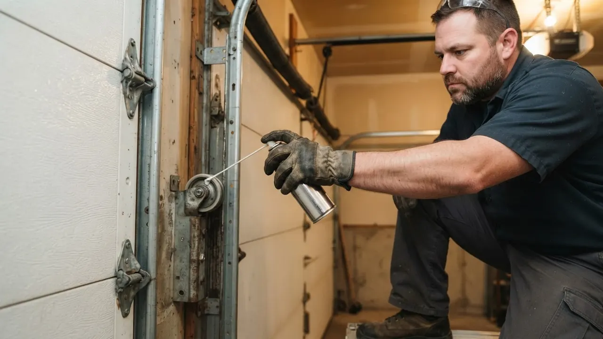

Garage Door Painting & Refinishing
Garage Door Painting Wilmington DE that stops rust cold
Garage Door Painting Wilmington DE is the fastest way to kill rust streaks, chalky fade, and peeling topcoat on a door that still works fine. We scuff, prime, and spray steel, aluminum, and wood doors across New Castle County, usually in one visit. If your door looks ten years older than the house, this is the fix.
Service overview
Garage Door Painting Wilmington DE, Done the Right Way
Garage Door Painting Wilmington DE is a surface-restoration service that strips chalk, rust, and failing topcoat off a door, then rebuilds the finish with a bonding primer and a flexible topcoat made for metal that moves. We pull the door off its springs' travel path, mask the track brackets and bottom seals, hand-sand the panels, and spray or roll two finish coats. Most single-car doors take three to four hours; double doors run five to six.
Wilmington doors take a beating. Road salt off I-95 and Concord Pike eats the bottom panel first, and the salt air that pushes up the Christina River leaves a chalky film on south-facing doors by year four. That is why garage door refinishing Wilmington DE homeowners call us about is rarely cosmetic. It is rust creeping up from the bottom seal, or a topcoat that has gone flat and started flaking around the hinges.

Practical benefits
Why Wilmington Homeowners Repaint Instead of Replace
A new insulated double door runs $1,800 to $4,500 installed. A refinish runs a fraction of that and buys you five to eight more years on the door you already have.
Stops Salt and Rust
Delaware road salt attacks the bottom panel and the seams around the hinges first. We sand the rust back to bare metal, spot-prime with a zinc-rich primer, and seal the bottom edge so the next winter's brine has nothing to bite into. Doors we refinished in 2021 are still holding at the bottom rail.
Color Matched to Your House
We bring a fan deck and match your siding, shutters, or front door trim. Popular Wilmington picks run from a deep charcoal that hides road film to a warm cream that reads clean against brick. We spray the panels and back-brush the stiles so the color lays even, with no lap marks in the sun.
Adds Curb Value Fast
A faded, chalky door is the first thing a buyer sees from the street. A refinish is a one-day job that resets the whole front elevation, and it costs less than a single new panel. Realtors working the Trolley Square and Highlands listings ask for it before photos.
Protects the Hardware
Paint is not just looks. A sealed door keeps moisture out of the hinges, roller brackets, and bottom seal, which is where frozen hinges and seized rollers start. We mask the nylon rollers and torsion springs, then lubricate the moving parts before we roll out, so the door runs as good as it looks.
How service works
What Our Refinishing Process Looks Like
Five steps, one visit for most doors, and a walkthrough before we pack up. Here is exactly what happens from the moment we pull into your driveway.
STEP 01
On-Site Assessment
We check the door for rust, delamination, dented panels, and failing caulk, and we test the opener and springs while we are there. If the torsion spring is on its last legs or a cable is frayed, we tell you before we paint, because painting over a door that is about to fail wastes your money. Fifteen minutes, no charge.
Tools and methods
Tools and Methods We Use on Every Door
Airless Sprayer with Fine-Finish Tip
Lays the topcoat flat and even across the panels with no brush marks or lap lines. We back-brush the stiles and panel edges by hand so the film locks into the seams.
Zinc-Rich Primer
Goes on any bare metal we expose while sanding rust. It sacrifices itself to protect the steel underneath, which is what stops rust from creeping back up the bottom panel.
Exterior Acrylic-Urethane Topcoat
Flexes with the door through freeze-thaw cycles instead of cracking at the seams. Holds color against UV and road film for five to eight years on a Wilmington door.
Power Drill and Socket Wrench Set
Used to pull the track brackets and hinge plates when we need to paint behind them, and to re-torque everything to spec before the door goes back into service.
C-Clamps and Vise Grips
Hold the door and track steady when we are working around the torsion springs and cable drums. Safety gear comes out with them, including safety glasses on every job.
Tape Measure and Level
Confirm the door is square and the track is plumb before we paint. A door that is out of level will rub the finish off one edge within a season.
ANSI/DASMA 102 Surface Prep Standard
We follow the DASMA surface preparation and finish guidance for sectional doors, which specifies cleaning, sanding, and priming steps before topcoat. It is the difference between a finish that bonds and one that peels at the first freeze.
Two-Coat Spray and Back-Brush
We spray the panel face for a factory-smooth look, then back-brush the stiles, panel edges, and hinge pockets by hand. That pushes paint into the seams where water would otherwise get behind the film.
UL 325 Safety Check
Before we leave, we test the safety sensors and the auto-reverse to UL 325 safety standard. A door that closes on a child or a pet is a real hazard, and it takes two minutes to confirm.
OSHA-Compliant Spring Handling
Any spring or cable work happens under OSHA safety compliance, with winding bars, C-clamps, and safety glasses. We do not paint a door that is not safe to stand under, and we do not cut corners on the mechanical side.

Where this service fits
When Wilmington Homeowners Call Us for a Refinish
A 1990s steel door in Brandywine Village that has gone chalky and rusted along the bottom rail after years of road salt.
We wire-brush the rust, spot-prime with zinc-rich primer, and spray two coats of exterior acrylic-urethane matched to the trim. We also replace the bottom seal so water stops sitting against the panel edge. The door reads as new from the street, the rust has stopped spreading, and the finish is holding through its third Wilmington winter.
A homeowner in Wawaset Park getting ready to list the house and needing the front elevation to photograph well.
We schedule a same-day refinish before the photographer arrives, match the color to the historic trim, and seal the weather stripping while we are there. One visit, one clean finish. The listing photos show a door that looks original to the house, and the seller avoids the $2,000-plus cost of a new door before closing.
A commercial property on the Riverfront with three roll-up doors that have rusted and faded to a flat gray.
We work around the loading schedule, refinish all three doors over two days, and reseal the bottom edges. Color is matched across all three so the building reads uniform from the street. The bays stay open through the job, and the building stops looking neglected to tenants and customers.
A wood carriage-style door in Cool Spring with peeling paint and exposed grain after a hard freeze-thaw season.
We sand the peeling edges back, prime the bare wood, and apply two topcoats with extra film build on the end grain, which is where wood doors soak up water. We also check the hinges and rollers while the door is down. The grain is sealed, the peeling has stopped, and the door holds its finish through the next few winters with a yearly touch-up.
Local execution
How Refinishing Plays Out Across Wilmington
Wilmington sits in a freeze-thaw belt, and that is the single biggest factor in how a garage door finish ages here. A door can swing from 20 degrees in January to 55 in February, and every one of those cycles works the paint film. Doors facing south off Concord Pike and Kirkwood Highway take the worst of it, because UV breaks down the topcoat faster on that side. Road salt off I-95 and the bridges is the other killer, and it hits the bottom panel and the weather stripping first. We schedule most refinish work in spring and fall, when the surface temperature sits between 60 and 80 degrees, which is the window where acrylic-urethane cures properly. If you need a repaint faded garage door Wilmington DE job done in the middle of summer, we start early and work the shaded side first. Winter jobs are possible in a heated garage, but we will tell you straight if the temperature is going to hurt the finish.
The Highlands
Older housing stock with a lot of original wood and steel doors. We see more peeling at the stiles here, and the tree canopy keeps some doors damp longer after rain.
Riverfront
Newer construction with steel doors, but the river air leaves a chalky film on south-facing panels by year four. A refinish resets the color and seals the bottom edge.
Wawaset Park
Historic homes where the door color has to match original trim. We bring a fan deck and match to the existing paint, not to a catalog swatch.
Brandywine Village
Close to the river and older industrial streets, so road film and salt spray hit the doors hard. Bottom-panel rust is the most common call here.
Union Park Gardens
Tight lots with doors close to the alley, which means more splash-back and more grime on the lower panels. We pressure-wash and degrease before any sanding.
Freeze-thaw cycles through January and February
Paint that is not flexible cracks at the panel seams. We use an acrylic-urethane topcoat rated for metal expansion, and we back-brush the seams so the film has extra build where it flexes.
Road salt and brine off I-95 and the bridges
Salt eats the bottom panel and the weather stripping first. We sand rust to bare metal, spot-prime with zinc-rich primer, and replace the bottom seal so brine has nothing to sit against.
Summer surface temperatures above 100 degrees in direct sun
Topcoat cures too fast and flashes, which leaves lap marks. We start early, work the shaded side first, and thin the topcoat to the manufacturer's spec for hot-weather spraying.
Salt air pushing up the Christina River
Leaves a chalky film on south-facing doors and speeds up fade. A UV-stable topcoat and a yearly wash keep the finish reading clean between full repaints.
Problems we solve
Problems a Repaint Solves Before They Get Worse
Most Wilmington doors we see are not failing because of age. They are failing because the finish quit doing its job, and the metal underneath started paying for it.
Rust creeping up from the bottom panel
We sand the rust back to bare metal, spot-prime with a zinc-rich primer, and seal the bottom edge and weather stripping. The door stops rusting where it started, and the new finish keeps water off the seam. Once rust reaches the panel seams it spreads sideways, and within two winters you are looking at a panel replacement instead of a repaint. That is a $400 to $900 jump in cost.
Chalky, faded topcoat on south-facing doors
We wash the chalk off with a degreaser, scuff the gloss, and rebuild the finish with a UV-stable acrylic-urethane topcoat. Color comes back, and the door holds it for five to eight years. Chalk looks like dust but it is the paint breaking down. Left alone, the finish goes flat, then flakes, and the door reads as neglected from the street. It also drags down curb value on a listing.
Peeling paint around hinges and stiles
We feather the edges back, prime the bare spots, and back-brush the topcoat into the stiles and panel edges so the film locks in. That is where cheap spray-only jobs fail, and where ours hold. Peeling starts at the edges where the door flexes. Once water gets behind the paint film, it lifts more of it every freeze-thaw cycle, and the bare metal underneath starts to pit.
Frozen hinges and seized rollers after winter
We free the hinges, replace worn rollers, lubricate the moving parts, and confirm the door runs smooth before we paint. A door that moves clean keeps its finish intact. A door that shudders and grinds wears the track and chews up the rollers. Paint cracks at the moving seams, and you end up repainting the same door every two years instead of every seven.


A practical standard for every visit.
Clear planningPrepared arrivalsCareful workLocal follow-through
Experience in the details
16 Years Painting Doors in New Castle County
Delaware Express Garage Door Service has been working on Wilmington doors since 2010, and we have refinished thousands of them across New Castle County. Our techs hold DASMA certification and IDEA certification, and we follow ANSI/DASMA 102 for door surface and finish work. That matters here, because a door that is painted wrong traps moisture at the bottom seal and rusts from the inside out. We also carry a Delaware contractor license and keep every job OSHA-compliant, including the spring-winding work that has to happen before a door can be safely painted.

Where we work
One local team. A lot of ground covered.
Downtown WilmingtonRiverfrontThe HighlandsTrolley SquareForty AcresBaynard VillageWawaset ParkCool SpringTrinity VicinityBrowntownLittle ItalyUnion Park Gardens
Check my address Notes from local customers
What Wilmington Neighbors Say
Our south-facing door was chalky and rusting along the bottom rail. The crew wire-brushed the rust, primed it, and sprayed two coats in one afternoon. Color matched our shutters perfectly. Two winters of road salt later, the bottom panel still looks new. Worth every dollar.
I had three painters quote the door and none of them mentioned the frayed cable. These guys caught it, replaced it, and then painted. Door runs quieter than it has in years. They texted me a window and hit it exactly. No surprises on the bill.
We manage six units with matching doors, and the finish was flaking across all of them. Delaware Express refinished the whole set over two days and worked around our tenants. The color is uniform, the seams are sealed, and the maintenance schedule they left us is actually useful.
Before the visit
Questions We Get About Garage Door Painting in Wilmington
Still wondering?(302) 556-5080
Most single-car doors run $250 to $450 and double doors run $400 to $750 in 2026, including prep, primer, and two topcoats. Rust repair, dented panel work, and heavy chalk removal add to the number. Wood doors cost more because they soak up more primer. We quote it on site in about fifteen minutes, free.
A 100% acrylic exterior topcoat over a bonding primer, sprayed on steel, and a zinc-rich primer on any bare metal. Wilmington's freeze-thaw swings and road salt punish oil-based paint, which gets brittle and cracks at the panel seams. We use a flexible acrylic-urethane that moves with the door and holds color for five to eight years.
A single door takes three to four hours and a double door takes five to six, start to finish, in one visit. That covers washing, sanding, masking, priming, and two topcoats. The finish is dry to the touch in about four hours and fully cured in seven days, so keep the door down and skip washing it for a week.
We do, and we have been doing it since 2010 out of Wilmington. We cover every ZIP in the city, including 19802, 19801, 19806, 19805, and 19809, plus the surrounding New Castle County neighborhoods. Call (302) 556-5080 and we will give you a window, often same day.
Keep exploring
Other Garage Door Work We Handle
Your next step is waiting
Get Your Garage Door Painting Wilmington DE Quote
One visit, one crew, and a finish built for Delaware winters. We have been painting Wilmington doors since 2010, and we quote on site in fifteen minutes, free. Call (302) 556-5080 and we will give you a window, often the same day.
Start with the basics
Call For Garage Door Service
Call (302) 556-5080 and tell us what your door is doing. We answer during business hours and run emergency calls after hours. Most days we can get a tech to you the same day, and we will give you a window, not a maybe.